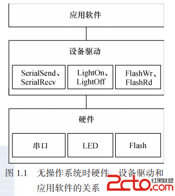
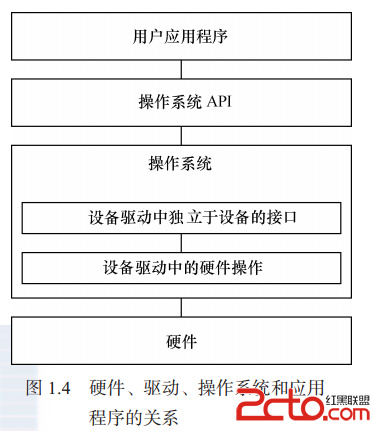

Linux
概念
机制，解决提供什么能力；策略，处理如何使用这些能力。一般，驱动属于机制范畴；应用归于策略范畴。
（对策略透明的）驱动分类
- 字符设备（open、close、read、write）：USB、鼠标等
- 块设备：硬盘等
- 网络接口：
内核划分

应用、操作系统、驱动和硬件



Linux 内核的组成部分

Linux 内核源代码目录结构
| 目录、文件 | 说明 |
|---|---|
| Documentation/ | 内核各部分的通用解释和注释 |
| arch/ | 和硬件体系结构相关 |
| block/ | 块设备驱动程序 I/O 调度 |
| certs/ | |
| crypto/ | 常用加密和散列算法（如 AES 、 SHA 等），还有一些压缩和 CRC 校验算法 |
| drivers/ | 设备驱动程序 |
| firmware/ | |
| fs/ | 支持的各种文件系统 |
| include/ | 头文件 |
| init/ | 内核初始化代码 |
| ipc/ | 进程间通信代码 |
| kernel/ | 内核部分，包括进程调度、定时器等，而和平台相关的部分在 arch/*/kernel/ |
| lib/ | 库文件 |
| mm/ | 内存管理，和平台相关部分在 arch/*/mm/ |
| net/ | 网络相关，实现各种网络协议 |
| samples/ | |
| scripts/ | 用于配置内核的脚本文件 |
| security/ | 主要是 SELinx 模块 |
| sound/ | ALSA 、OSS 音频设备驱动核心代码和常用设备驱动 |
| tools/ | |
| usr/ | 实现用于打包和压缩的 cpio 等 |
| virt/ | |
| COPYING | |
| CREDITS | |
| Kbuild | 内核的编译系统 |
| Kconfig | 给用户提供配置选择的功能 |
| MAINTAINERS | |
| Makefile | 定义 Linux 内核编译规则 |
| README | |
| REPORTING-BUGS |
驱动开发
Linux 内核中增加程序需要完成以下3项工作：
- 将编写的源代码复制到Linux内核源代码的相应目录
- 在目录的 Kconfig 文件中增加关于新源代码对应项目的编译配置选项
- 在目录的 Makefile 文件中增加对新源代码的编译条目
编程风格
- Documents/CodingStyle
- scripts/checkpatch.pl：检查代码风格是否符合 CodingStyle
- 工程阶段，一般可以在 SCM 软件的服务器端用 pre-commit hook，自动检查工程师提交的代码是否符合 Linux 的编码风格，如果不符合，则自动拦截
附录
- Linux Cross Reference：Linux内核源码的交叉索引
- minicom：串口通信工具